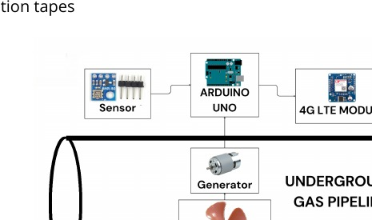
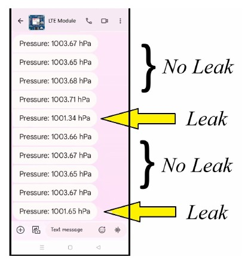

Overview
The project investigated a self-powered monitoring node for underground gas pipelines. A small turbine-generator harvested energy from airflow inside a pipe, while a pressure sensor, Arduino and LTE module demonstrated remote monitoring and simulated leak detection.

Hardware integration
Different turbine blades and DC motors were compared experimentally before the selected arrangement was integrated into a pipe test rig. The electronics combined a BME280 pressure sensor, Arduino UNO, DC-DC conversion and LTE communication.
Leak simulation
An adjustable valve was used to create pressure drops representing a leak event. Pressure measurements were transmitted remotely to a phone, demonstrating the sensing and communication concept.

Scope & deployment considerations
The project is best understood as a laboratory proof of concept, not a deployable natural-gas safety system. The report separately identifies hazardous-area requirements such as gas detection, insulation, grounding, explosion-resistant equipment and pressure protection.
Source material
The project narrative above is condensed from the submitted coursework/thesis and keeps design estimates, simulation results and demonstrated hardware distinct.